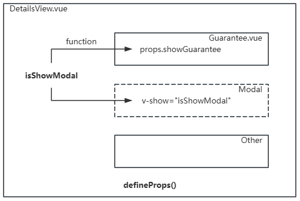

const props = defineProps(['propMsg', 'propId'])
const props = defineProps({
// 简洁声明
propMsg: String,
// 详细声明
propId: {
type: Number,
required: false,
default: 18
}
})
<div>{{ propMsg }} - {{ props.propId }}</div>
<div>computed {{ comp }}</div>
import { computed } from 'vue';
const props = defineProps({
msg: String
})
const comp = computed(() => {
//return msg.toUpperCase()
return props.msg.toUpperCase()
})
import { ref } from 'vue';
import Test from './components/Test.vue';
let msg = ref('hi,there')
<Test :propMsg="msg" propId="18"></Test>
<Test :msg="msg"></Test>
<Test :msg></Test>
<Test :propId="18" />
<Test :propId="item.id" />
<Test isDone />
<Test :isDone="false" />
<Test :isDone="item.flag" />
<Test :arr="[1,2,3,4,5]" />
<Test :arr="item.list" />
<Test :obj="{id:1001, name:'glpla'}" />
<Test :obj="item.author" />
const props = defineProps({
// 简洁声明
closeFn: Function,
// 详细声明
confirmFn: {
type: Function,
default: () => {}
}
})
<button @click="closeFn">×</button> <button @click="confirmFn">confirm</button>
const closeFn = () => { }
const confirmFn = () => { }
<Msg :closeFn="closeFn" :confirmFn="confirmFn"></Msg>
<button @click="sayHi('hi,there.')">say hi</button>
const sayHi = (para) => { console.log(para) }
<div class="guarantee"> // ... <button @click.stop="props.showGuarantee">详情</button> </div>
const props = defineProps({
showGuarantee: {
type: Function,
default: () => { }
}
})
<Guarantee :show-guarantee="switchModal"></Guarantee> <div class="modal" v-show="isShowModal"></div>
import { ref } from 'vue';
import Guarantee from '@/components/Guarantee.vue';
const isShowModal = ref(false);
const switchModal = () => {
isShowModal.value = !isShowModal.value
}
<Guarantee :show-guarantee="() => isShowModal = true"></Guarantee> <div class="modal" v-show="isShowModal"></div>
<div class="title">
<h3>{{ title }}</h3>
<button @click="handle">
<span>查看全部</span>
<span class="iconfont icon-jiantou_liebiaoxiangyou_o"></span>
</button>
</div>
const props = defineProps({
title: {
type: String,
default: ''
},
handle: {
type: Function,
default: () => { }
}
})
<Title title="我的优惠专区" :handle="toCoupon"></Title> <Title title="福利中心" :handle="toWelfare"></Title>
const toCoupon = () => {
// alert('to coupon')
}
const toWelfare = () => {
// alert('to welfare')
}
. 普通数据
. 函数/方法
const { msg } = defineProps({
msg: { type: String, default: 'Vue.js' }
})
const props = defineProps({
msg: { type: String, default: 'Vue.js' }
})
<div class="copyright">
<img class="img" :src='src' alt="">
<div class="desc">2024 - 2026 © Copyright, powered by {{ id }}</div>
</div>
const props = defineProps({
src: {
type: String,
default: 'https://glpla.github.io/imgs/avatar.jpg'
},
id: {
type: String,
default: 'glpla.github.io'
}
})
const props = defineProps({
items: {
type: Array,
default: () => []
},
currentInd: {
type: Number,
default: 0
}
})
<div class="indictator">
<span class="dot" :class="{ 'active': currentInd === ind }"
v-for="(item, ind) in items" :key="ind">{{ ind + 1
}}</span>
</div>
<Indicators :items="imgsUrl" :currentInd="currentInd"/>
const props = defineProps(['imgsUrl'])
<Swiper :imgsUrl="imgsUrl"/>
<template v-if="goods.length"> <GoodsItem :product="item" v-for="(item, ind) in goods" :key="item.id" /> <footer class="f-s-s">我是有底线的~</footer> </template> <div v-else>商品获取失败，请刷新页面</div>
<div class="com-tab">
<div v-for="(tab, index) in props.tabs" :key="index" @click="props.selTab(tab)">{{ tab }}</div>
</div>
const props = defineProps({
tabs: {
type: Array,
default: () => []
},
selTab: {
type: Function,
default: () => { }
}
})
<ComTab :tabs :sel-tab="selTab"></ComTab>
<div>{{ currentTab }}</div>
import { ref } from 'vue';
import ComTab from './ComTab.vue';
const tabs = ['首页', '设置', '帮助'];
const currentTab = ref('首页');
const selTab = (tab) => {
currentTab.value = tab;
}
<Switch :switchs="switchs"></Switch>
<Tabbar :tabs="tabs"></Tabbar>
<Recommend :reco="goods.recommend" />
<Map class="map" :center="center" :geometries="geometries"></Map>